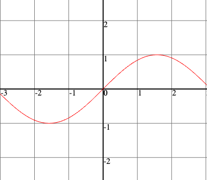

Home
Projects
SWin
A cross-platform window management library with support for native UI and native OpenGl context creation.
Source

Grapher2D
A 2D graphing calculator written in C using the SWin library for window management, OpenGL context creation and the creation of UI elements.
Source
game2d.js
A 2D game engine based on WebGl.
Online Demo
Source
grapher2d.js
An implementation of the core technology behind Grapher2D using WebGL.
Online Demo
Source